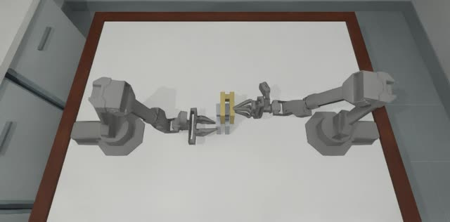
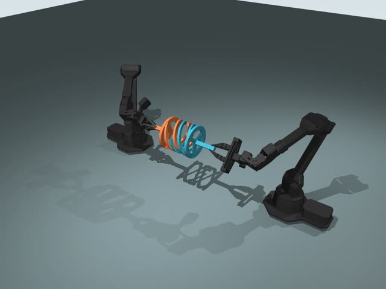
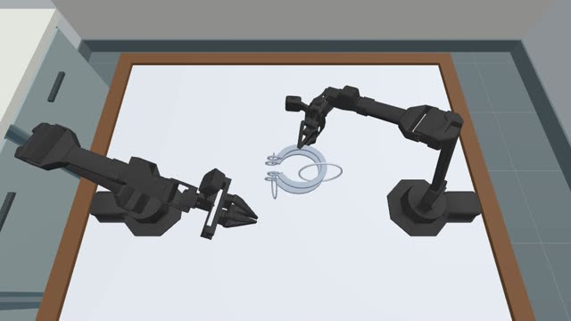
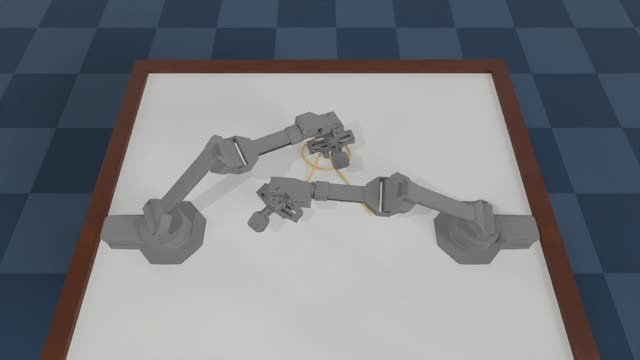
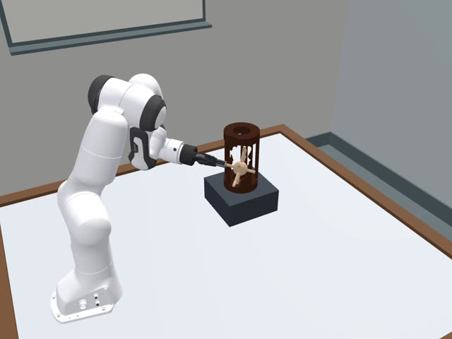
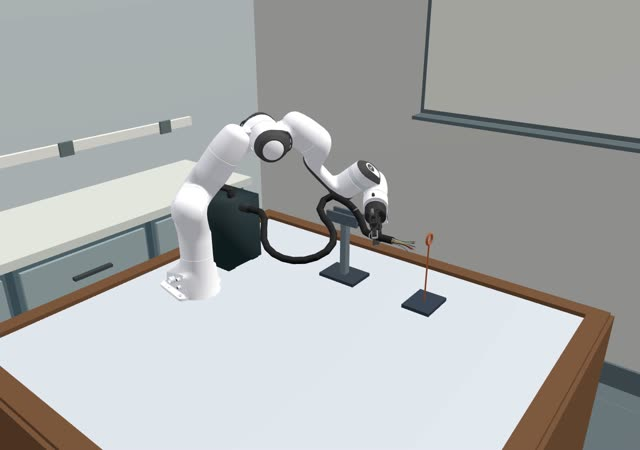
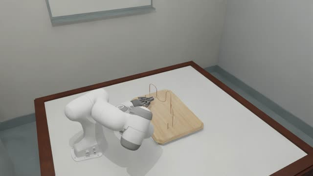
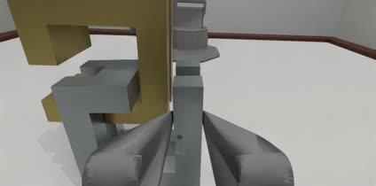
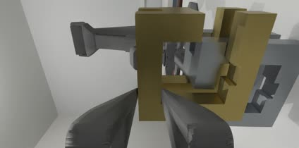
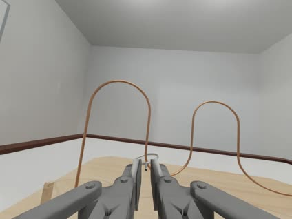

TopoGym×VLA
TopoGym 仿真器概览，VLA 从哪里接入、接口怎么设计，以及首批评测哪几个 VLA。左边是 Gym，右边是 VLA，中间只有一个三类数据结构的协议。
Genesis 1.2.1 上的机器人拓扑操作仿真器，13 类任务。9 个任务用 ALOHA 双臂，4 个用 Panda 单臂。VLA 在评测循环的 agent.act(obs) 处接入。
模型与环境分进程：模型做服务端（TCP，Python 标准库），评测进程驱动循环。Gym 侧一个通用适配器（每种机器人只有一行常量），VLA 侧按模型写子类。录像在 Gym 侧完成，不需要 Harbor。
每个系列选一个：π0.5、GR00T N1.7、X-VLA-0.9B、DM0.5。只评测阶段按 checkpoint 匹配：Panda 用 π0.5 / GR00T / MolmoAct2 的 DROID 版，ALOHA 用 π0.5-base 与 X-VLA-RoboTwin2。π0.7 等更新的模型未开放权重。
01TopoGym 代码库
TopoGym 是基于 Genesis 1.2.1 的机器人拓扑操作仿真器：解环、分离互锁件、穿绳、解结、铺布。topogym/ 包提供 gym 式接口 make → reset(seed) → interaction() → step(action)。物理由 Genesis 计算（刚体、PBD 布料、FEM/IPC 柔体），RGB 由 Nyx 渲染（compact_lab 场景，848×480）。
仓库中另有 Harbor 层（tasks/ 等目录），用于评测写代码控制机器人的 LLM agent。它与 VLA 接入是并行的两条线，本文只在讨论部署形态时提到它。
任务一览






截帧自 demos/ 中已归档的完整机器人演示视频，部分为早期渲染配置（背景与当前 compact_lab 不同）。
"可解证据"指 solvability_proof/ 中从 home 姿态连续执行到 task_success=True 并独立复核的实例，其运行配置（CPU、25 ms tick、EE_ABS、辅助抓持、无 RGB）与 VLA 评测不同。"指令"表示任务类定义了英文 instruction；13 个中 5 个有。
两种机器人
- 手臂
- 2 × 6 关节：waist, shoulder, elbow, forearm_roll, wrist_angle, wrist_rotate
- 夹爪
- 平行夹爪
gripper_position_m：0.037 全开 / 0.002 全闭 - 相机
cam_highcam_lowcam_left_wristcam_right_wrist- 动作
- 分组
left/right；扁平后 14 维 - 任务
- cast_coil、cast_keyhole、horseshoe_ring、interlocked_claws、blanket_flatten、rope_threading、knot_untying、orbits、slotted_post_ring

- 手臂
- 1 × 7 关节
- 夹爪
- Robotiq 驱动关节
gripper_position_rad：0.0 全开 / 0.8 全闭 - 相机
agentviewfront_obliquewrist- 动作
- 分组
arm；扁平后 8 维 - 任务
- buzz_wire_3d、hedgehog_in_cage、lock_picking、fiber_bundling
两种机器人不需要选不同的 VLA。首选模型都是跨本体模型（预训练数据含多种机器人），同一个模型按机器人各微调一个 checkpoint 即可；机器人之间的差别由 Gym 侧的 EmbodimentAdapter 处理。各模型对 ALOHA 与 Franka 的支持见第 4 节。
分层结构与文件
Env；VLA 经 VLAAgent 只拿到 Interaction 句柄（绿色箭头）。world/ 是唯一调用 Genesis scene.step 的模块（有架构测试约束）。topogym/ 仓库根 ├── topogym/ ★ 仿真器包（242 个 .py，约 3 万行） │ ├── simulator/ make · Env · Interaction · 特权回溯 · 历史 · SegmentRunner │ ├── config/ hydra 场景/相机/机器人 profile · 任务注册表 │ ├── world/ GenesisWorld：建场景、推进物理、保存/恢复状态 │ ├── robot/ ALOHA / Panda 描述 · control.py 四种控制模式换算 │ ├── sensors/ observation.py 观测组装 · Nyx RGB · 相机标定 │ ├── tasks/ 13 个任务：declare 资产 → bind → update 判据 → observe │ ├── planning/ 7 类任务的脚本化参考解（演示数据来源） │ ├── recording/ data/ RecordingSession 录像 · Transition → JSONL/HDF5 │ └── solvers/ evaluation/ assets/ utils/ ├── configs/ assets/ 任务变体 yaml、task_cards/ · 机器人模型与任务几何 ├── tests/ 106 个 test_*.py：contracts / integration / unit / architecture ├── scripts/ 50 个脚本 ├── solvability_proof/ demos/ 可解证据 · 正式演示 MP4 ├── docs/ develop/ · progress/ · vla_doc/（现有 VLA 调用手册） ├── vla/ VLA 接入（本文在 vla/docs/；代码待实现） ├── tasks/ images/ harbor_agents/ ci_checks/ Harbor 层（coding agent 评测，与本文并行） └── legacy/ 归档实现，活动代码不导入
一个控制步
step() 的内部顺序。按 6–10 s/步计，默认 25 s episode（1000 步）约 2–3 小时。| 现有事实 | 对 VLA 接口的影响 |
|---|---|
一个进程只能有一个活跃 Env（Genesis 全局状态） | 多任务评测逐个 with make()，或开多个仿真进程 |
关节或夹爪越界时 step 抛 ValueError，不自动截断 | 适配器必须截断 |
| 夹爪是原生关节坐标（米 / 弧度），不是开口宽度 | 适配器负责归一化与反归一化 |
13 个任务中 11 个有英文指令：5 个是 instruction 类属性，6 个 placement 任务经 obs["task"]["instruction"] 公开；cast_coil、blanket_flatten 没有 | 需要一份版本化的 instruction 文件，补 2 条 |
架构测试禁止 topogym.policies；docs/vla_doc 要求不改 simulator/、tasks/ | VLA 代码放在仓库根 vla/，不放进 topogym/ 包 |
02VLA 从哪里接入
VLA 只在两处接入：训练时读取从 TopoGym 导出的数据集；评测时在每个控制步的 agent.act(obs) 里被调用。建场景、推进物理、判定成败、录像、记结果都由 Gym 侧完成。
整体流程
.venv-gs121-nyx）中运行，绿色步骤在模型各自的环境中运行。第 5 步两者都参与：评测进程驱动循环，每隔 execute_steps 个控制步向模型服务请求一次动作块。评测主循环（伪代码）
下面三段是完整链路。绿色高亮是 VLA 介入的位置，其余都是 TopoGym 已有接口。
# ── ① Gym 环境：vla/gym/run_eval.py（管理方） ── client = RemoteClient(args.policy) # 连接 VLA 服务 spec = client.spec ← 握手：服务端发来 PolicySpec cfg = dict(robot_id=spec.embodiment, # aloha / panda_robotiq control_mode=MODE[spec.action_space], # joint_abs → JOINT_ABS，ee_abs → EE_ABS observation_mode=OBS[spec.action_space], # ee_abs 时切到 EE，拿 TCP 位姿 control_decimation=int(400 / spec.control_hz)) # 物理 tick 400 Hz；50 Hz → 8 agent = VLAAgent(client, instruction=INSTRUCTIONS[args.task]) with topogym.make(args.task, variation_id=args.variation, **cfg) as env: for seed in args.seeds: env.reset(seed=seed) # 管理方：重建场景 actor = env.interaction() # 操作方句柄：只有 step / observe agent.initialize({"action_spec": actor.action_spec}) ← client.reset(seed)：服务端清状态、设随机种子 with episode_recorder(env, out / f"seed_{seed}", enabled=args.record): # 见 3.3，可关 obs = actor.observe() while True: action = agent.act(obs) ← VLA 介入：队列空时 client.infer(Observation) → ActionChunk obs, _, terminated, truncated, info = actor.step(action) if terminated or truncated: break write_result(seed, classify(info)) # success / task_failure / time_limit / unevaluated … # ── ② Gym 环境：vla/gym/agent.py ── def act(self, obs): if not self.queue: o = self.adapter.observation(obs, self.instruction) # TopoGym obs → Observation（选相机、缩放、拼 state） chunk = self.client.infer(o) ← 网络调用：一次推理，返回 (H, D) self.queue.extend(chunk.actions[:self.spec.execute_steps]) return self.adapter.action(self.queue.popleft()) # (D,) → 截断 → 动作字典 # ── ③ VLA 环境：vla/models/serve.py ── vla = REGISTRY[args.model](); vla.load(args.checkpoint, device="cuda") listener = Listener(("localhost", args.port)) # 标准库 multiprocessing.connection while True: conn = listener.accept() # 一对一：一次只接一个评测进程 conn.send_bytes(encode(vla.spec)) # 握手 try: while True: req = decode(conn.recv_bytes()) # JSON 头 + 数组原始字节 if req["type"] == "reset": vla.reset(seed=req["seed"]); conn.send_bytes(encode({"ok": True})); continue chunk = vla.infer(Observation(**req["obs"])) ← 模型专属预处理 → 前向 → 后处理 conn.send_bytes(encode({"actions": chunk.actions})) except EOFError: # 评测进程断开，等下一个 conn.close()
一个 episode 的时序
reset、以及队列为空时的一次 infer。其余 execute_steps − 1 个控制步不经过网络。03接口设计
| 目标 | 可检验的标准 |
|---|---|
| Modular | Gym 侧代码不 import 任何模型库；VLA 侧代码不 import Genesis / topogym |
| Scalable | 加一个 VLA = 1 个子类 + 1 个依赖环境；加一个机器人 = 1 个适配器；加一个任务 = 1 条 instruction |
| 可切换 | 只改评测配置的 policy.address |
| 训练 / 评测一致 | 数据导出与在线评测共用同一个适配器 |
| Simple | 协议 3 个数据类；不引入插件框架 |
两层映射：2 + N（已确认）
action_spec 读取，每种机器人只有夹爪开 / 合值和默认相机两项常量。部署形态：模型与环境怎么分开
三种做法的差别在进程边界放在哪里、谁驱动循环。
Client–Server 的代价。延迟不是主要问题；主要代价是多一个进程要管理。
| 环节 | 耗时 | 发生频率 | 来源 |
|---|---|---|---|
| 序列化（JSON 头 + 数组原始字节；3 张 224×224 图 + state，约 0.45 MB） | < 1 ms | 每次推理 | 估算 |
| 传输：同机 localhost | < 1 ms | 每次推理 | 估算 |
| 传输：同机房 1 GbE | 约 4 ms | 每次推理 | 估算（0.45 MB ÷ 125 MB/s） |
| 传输：跨地域（RTT 30 ms） | 约 40 ms | 每次推理 | 估算 |
| 模型推理（约 3B，单卡） | 0.1–0.5 s | 每次推理 | 各模型 README 量级 |
| 仿真一个控制步 | 6–10 s | 每个控制步 | docs/vla_doc 实测 |
每次推理之间有 execute_steps（例如 10）个控制步，即 60–100 s 仿真墙钟；通信开销在同机房部署下低于 0.01%。不需要异步推理或 real-time chunking，同步阻塞调用即可。
| 代价 | 处理 |
|---|---|
| 多一个进程要启动和管理 | run_eval 连接成功并收到 spec 即视为服务就绪；服务日志单独保存 |
| 服务崩溃或超时 | infer 设超时；失败记为 policy_error，不计为任务失败，可重连后重跑该 seed |
| 两侧协议版本不一致 | PolicySpec 带 protocol_version，握手时校验 |
| 跨进程调试不便 | 同一个 BaseVLA 子类可经 LocalClient 在同进程运行（依赖允许时）；服务端可加回放模式，按数据集动作回放来检查 Gym 侧 |
| 模型采样有随机性（flow matching 噪声） | reset 消息带 seed，服务端设随机种子，保证可复现 |
传输协议。选 Python 标准库的 TCP 连接（multiprocessing.connection），消息是 JSON 头 + 数组原始字节。TopoGym 环境不需要装任何包。
| 方案 | 谁在用 | 优点 | 缺点 | 结论 |
|---|---|---|---|---|
| HTTP + JSON（FastAPI） | OpenVLA-OFT、X-VLA、MolmoAct2 自带服务 | 简单，curl 可调试 | 数组要 base64 或 JSON 编码，体积和耗时增加；无连接状态，握手和 reset 需额外约定 | 不选 |
| WebSocket + msgpack | openpi、vla-eval、XPolicyLab | 长连接；二进制数组 | TopoGym 环境要多装 msgpack、websockets；一对一本机连接用不到它的多客户端与浏览器支持 | 不选 |
TCP（标准库 multiprocessing.connection）+ JSON 头 + 数组原始字节 | Python 标准库 | 两侧都不需要装包；自带消息分帧；长连接，连接时下发 PolicySpec | 编解码自己写（约 30 行）；只用 send_bytes / recv_bytes，不用 pickle（跨环境版本兼容和安全都无法保证） | 选用 |
| gRPC | LeRobot async inference | 强类型 schema | 需要 protobuf 代码生成，两侧依赖更重 | 不选 |
| ZMQ REQ/REP | Isaac-GR00T 官方服务 | 延迟低 | 无握手 / 健康检查约定 | 不选；GR00T 子类内部可直接调用其策略对象 |
能否复用 Harbor？Harbor limited 模式属于形态 C。它的价值在于隔离：agent 看不到仿真内部、证据由服务持有、验证在独立沙箱重放。VLA 只能看到适配器给它的输入，不存在这类作弊路径，所以不需要这层隔离。需要的录像功能在 Gym 侧就有，见下节。
录像：在 Gym 侧完成，不需要 Harbor
| 方式 | 输出 | 额外开销 | 用途 |
|---|---|---|---|
RecordingSession + env.add_frame_sink | 每个相机一个 MP4、帧索引、清单 | 只有视频编码；复用观测时已渲染的同一帧，不额外渲染 | 默认：每个 episode 录像 |
# episode_recorder 的实现（示意，未运行）：Env 每次 step 结束时把 SensorFrame 推给 sink from topogym.recording.session import RecordingSession with RecordingSession(out / f"seed_{seed}", fps=30, metadata=dict(env.episode_metadata)) as rec: stop = env.add_frame_sink(rec.append) # 与观测共用同一份 Nyx 渲染结果 rec.append(env.sensor_frame()) # 初始帧 outcome = run_episode(actor, agent) # 评测循环不变 stop() rec.finish({"outcome": outcome}) # 视频完成不代表任务成功，结果单独写入
标准协议：3 个数据类
# vla/protocol.py —— Gym 与 VLA 两侧共享，只依赖 numpy + 标准库 @dataclass(frozen=True) class PolicySpec: # 服务端在连接建立时发给客户端 protocol_version: int # 握手时校验 name: str # "pi05_topogym_cast_coil" embodiment: str # "aloha" | "panda_robotiq" cameras: tuple[str, ...] # 标准相机名，如 ("cam_high", "cam_left_wrist", "cam_right_wrist") image_size: tuple[int, int] # (H, W)；缩放由 Gym 侧完成，减少传输 action_space: str # "joint_abs" | "ee_abs" control_hz: float # 训练数据的控制频率 chunk_size: int # 每次推理输出的步数 H execute_steps: int # 每块执行前几步后重新推理 @dataclass(frozen=True) class Observation: images: dict[str, np.ndarray] # 相机名 → (H, W, 3) uint8 state: np.ndarray # (D,) float32，排列见下 instruction: str episode_id: str step: int @dataclass(frozen=True) class ActionChunk: actions: np.ndarray # (H, D) float32，与 state 同一排列，绝对目标
| 约定 | 内容 | 原因 |
|---|---|---|
| 夹爪 | 归一化开度 [0,1]，1 = 全开 | 与 ALOHA / ACT / RoboTwin 数据一致；适配器负责与 0.037/0.002 m、0.0/0.8 rad 互换 |
| 绝对目标 | 标准动作一律是绝对值；模型内部预测的相对量由 VLA 子类换算 | openpi 的 delta 参考点是推理时刻的 state；TopoGym JOINT_DELTA 的参考点是每步提交前的实测值，二者不同，在 Gym 侧换算会出错 |
| EE 空间 | ee_abs：每臂 [xyz 3, rot6d 6, 夹爪 1]，TopoGym 世界系、TCP 点；ALOHA 20 维，Panda 10 维 | 给默认输出末端位姿的模型用；Gym 侧对应 EE_ABS（内部做 IK） |
| 相机 | ALOHA 默认 cam_high + 两个腕部；Panda 默认 agentview + wrist | 与 openpi ALOHA 和 RoboTwin 2.0 的相机组合一致 |
总体架构与各环节的输入输出（点击切换 VLA）
图中 ①–⑥ 与下表对应。切换模型时，左侧 Gym 侧代码不变，只有 EvalRunner 按新的 PolicySpec 改 make 参数；模型专属的处理全部在第 ④ 步、子类内部。
Observation），④ 发生在选中模型的子类内部。下方面板随所选模型更新。| 环节 | ALOHA（例：cast_coil） | Panda（例：buzz_wire_3d） |
|---|---|---|
| 1 Env → Agent TopoGym 原生观测 |
rgb：4 × (480, 848, 3) uint8robot.left / right：joint_position_rad (6,)、joint_velocity_rad_s (6,)、finger_position_m (2,)state：episode_id、physics_step、sim_time_s …task：任务测量量（不传给 VLA） |
rgb：3 × (480, 848, 3) uint8robot.arm：joint_position_rad (7,)、joint_velocity_rad_s (7,)、finger_position_rad (2,)state、task 同左 |
| 2 Adapter → 标准 Observation |
images：cam_high、cam_left_wrist、cam_right_wrist 缩放到 spec.image_sizestate (14,) float32：[左 6 关节, 左开度, 右 6 关节, 右开度]；开度 = (finger₀ − 0.002) / 0.035instruction：来自 instructions.yaml |
images：agentview、wriststate (8,) float32：[7 关节, 开度]；开度 = 1 − finger₀ / 0.8instruction 同左 |
| 3 传输 | JSON 头 {"type": "infer", ...} + 数组原始字节，约 0.45 MB（3 张 224×224）；每 execute_steps 个控制步一次 | |
| 4 子类内部 | 模型专属：图像预处理、state 归一化或补零、prompt 格式、前向（flow matching 去噪 / 自回归解码）、反归一化、相对量 → 绝对量。见上方面板与第 4 节 | |
| 5 返回 | ActionChunk.actions (H, 14) float32：绝对关节目标 + 开度；ee_abs 时为 (H, 20) | (H, 8)；ee_abs 时为 (H, 10) |
| 6 Agent → Env TopoGym 动作字典 |
JOINT_ABS：{"left": {"joint_position_rad": [6], "gripper_position_m": 0.002 + 0.035·开度}, "right": {...}}EE_ABS：每臂 position_world_m [3] + orientation_wxyz [4] + 夹爪 |
JOINT_ABS：{"arm": {"joint_position_rad": [7], "gripper_position_rad": 0.8·(1 − 开度)}}EE_ABS 同左 |
VLA 实际看到的输入（默认相机组合，缩放前）：
ALOHA · 3 路

cam_left_wrist
cam_right_wrist+ state (14,) + "Assemble the two metal pieces into the four-layer coil, then release them."
Panda · 2 路

wrist+ state (8,) + "Guide the metal loop along the entire wire without touching it, …"
一次 act() 与动作块
chunk_size=50、execute_steps=10 时，每 10 个控制步请求一次模型。仿真代价远大于推理，精细任务可以把 execute_steps 调小、更频繁地重推理。代码骨架与目录
# ── Gym 侧：vla/gym/adapter.py ── 两种机器人共用，由 action_spec 驱动 class EmbodimentAdapter: def __init__(self, action_spec: dict, spec: PolicySpec): ... def observation(self, obs: dict, instruction: str) -> Observation: ... # ② def action(self, row: np.ndarray) -> dict: ... # ⑥ 截断 + 夹爪反归一化 # ── VLA 侧：vla/models/base.py ── 不依赖 topogym / Genesis class BaseVLA(ABC): spec: PolicySpec @abstractmethod def load(self, checkpoint: str, device: str) -> None: ... @abstractmethod def infer(self, obs: Observation) -> ActionChunk: ... # ④ def reset(self, seed: int) -> None: # 清内部状态、设随机种子 ...
vla/ 只改这个目录 ├── README.md 快速上手：装环境 → 下 checkpoint → 起服务 → 跑评测 ├── setup.sh 唯一安装入口：setup.sh pi05 | groot | molmoact2 | xvla（只建模型环境） ├── protocol.py PolicySpec / Observation / ActionChunk + 编解码（两侧共用，只用标准库 + numpy） ├── gym/ 只在 TopoGym 环境使用 │ ├── adapter.py 通用适配器（由 action_spec 驱动，两种机器人共用） │ ├── agent.py client.py VLAAgent；RemoteClient / LocalClient │ └── run_eval.py 读 YAML 配置 → results.jsonl / summary.json / MP4 ├── models/ 只在各模型环境使用 │ ├── base.py serve.py dummy.py │ └── pi05/ groot/ molmoact2/ xvla/ 每个目录一个 model.py ├── configs/ eval/*.yaml models/*.yaml instructions.yaml ├── tests/ └── docs/ DESIGN.md · index.html · IMPL_PLAN.md（设计文档与实施计划）
训练数据与评测同构
VLA 在 TopoGym 上零样本基本不可用，需要用 TopoGym 自己的演示微调。export_lerobot.py 读取 Env 的 Transition，经同一个 EmbodimentAdapter 转成 LeRobot 数据集；state 排列、夹爪归一化、相机名、图像尺寸、控制频率只在一处定义。导出时同时写关节目标和 TCP 位姿两列（TCP 由 FK 计算），关节空间模型和末端空间模型共用同一批演示。
| 模型 | 训练数据格式 | 从主格式（LeRobot v2.1）转换 |
|---|---|---|
| π0.5 | LeRobot v2.x（openpi 固定的旧版 LeRobot） | 直接使用；用 compute_norm_stats.py 算统计量 |
| GR00T N1.7 | GR00T 版 LeRobot v2 + meta/modality.json | 补 modality.json，重算 stats.json 与 relative_stats.json |
| X-VLA-0.9B | 自定义 handler + meta.json | 基于仓库的 LeRobot v2.1 handler；state 与动作取 TCP 列（EE6D） |
| DM0.5 | OpenDM JSONL（每 episode 一个文件） | 转换脚本逐帧写出图像路径、14 维 state、prompt |
topogym/planning/ 中 7 类任务的脚本化参考解，需要在与评测相同的配置（CUDA、RGB、control_decimation、辅助抓持设置）下重新执行并渲染。现有 solvability_proof/ 是 CPU、无 RGB、25 ms tick，不能直接当训练数据。决策
| 决策 | 结论 | 原因 |
|---|---|---|
| VLA 代码位置 | 已定：仓库根 vla/，设计文档在 vla/docs/ | 架构测试禁止 topogym.policies；docs/vla_doc 要求不改 simulator / tasks |
| 控制频率 | 已定：control_decimation = round(400 / 数据频率)，结果记录实际频率（DROID 15 Hz → 27，即 14.81 Hz） | 与数据频率误差 ≤ 2.6%；不写时间重采样代码 |
| 辅助抓持 | 已定：零样本评测关闭 | 开与不开的成绩不能比较；真机数据没有辅助抓持 |
| 传输 | 已定：标准库 TCP（multiprocessing.connection） | TopoGym 环境不装新包 |
| instruction | 待确认：新建 vla/configs/instructions.yaml，起草 cast_coil、blanket_flatten 两条 | 其余 11 个任务的指令可从代码取 |
| 首批任务 | cast_coil、cast_keyhole（ALOHA）；buzz_wire_3d（Panda） | 刚体、有参考解；FEM 任务显存与耗时更高且无可解证据 |
04VLA 选型
选型标准：热度高、最新、最强、开源权重、每个系列只选一个。LeRobot 是否集成不作为依据；每个模型用它自己的官方推理代码接入（各一个子类），保证复现精度。资料核对日期 2026-09-29（GitHub / Hugging Face API、源码、arXiv、官方排行榜）。
- 发布
- 论文 2025-04；开源权重 2025-09
- 规模
- 约 3.3B · PaliGemma + flow-matching 动作专家
- 热度
- 14k stars · 2,005 引用
- 微调
- LoRA > 22.5 GB，4090 可跑
π0.7、π*0.6 未开源，π0.5 是这个系列最新的开源版本。第三方评测的开源 VLA 中，它在 RoboTwin 2.0 与 RoboDojo 上都最高；BEHAVIOR 2026 官方基线。预训练含 ALOHA（Trossen）、AgileX 与 Franka。
- 发布
- 2026-03（GTC）；正式版 2026-07
- 规模
- 3.1B · Cosmos-Reason2-2B + flow-matching DiT
- 热度
- HF 月下载 137k（开源 VLA 第一）· 8.1k stars
- 微调
- ≥ 40 GB，无 LoRA
BEHAVIOR 2026 官方基线。预训练没有 ALOHA 类数据（最接近的是 YAM 双臂），ALOHA 要按新本体从头训投影层；第三方 RoboDojo 成绩偏低（1.3%）。GitHub 与 HF 上的许可证表述不一致，商用前需确认。
- 发布
- 2025-09；ICLR 2026
- 规模
- 0.9B · Florence-2 + soft prompt + flow matching
- 热度
- 736 stars · 323 引用
- 许可
- 代码与权重均 Apache-2.0
第三方评测中仅次于 π0.5（RoboTwin 2.0 平均 44.5，RoboDojo 6.5%）。预训练含 AgileX 双臂与 DROID Franka，有 RoboTwin2 与叠布 checkpoint。动作空间是绝对末端位姿，接入时走 EE_ABS。
- 发布
- 2026-07
- 规模
- 5.8B · Gemma3-4B + 680M flow-matching 动作专家
- 热度
- 2.2k stars（发布 12 周）
- 许可
- 代码 Apache-2.0；权重 Gemma
RoboDojo 第 1（19.3%）、RoboTwin 2.0 93.6 / 93.3，均为作者自报。预训练含 AgileX ALOHA 与 Franka，有官方 ALOHA checkpoint。没有论文，成绩需要我们自己的评测来检验。
MolmoAct2（Ai2，2026-05）：权重、数据、代码全开源（Apache-2.0）；原生输出绝对关节，有 14 维双臂 YAM 与 8 维 DROID Franka checkpoint，与本方案的标准格式最贴合；第三方 RoboDojo 成绩低（0.38%）。G0.5（Galaxea，2026-06）：RoboDojo 自报第 2（14.9%），有 RoboTwin 与 DROID checkpoint；许可证禁止商用，权重需申请。
π0-FAST 与 π0.5 同属 π 系列，按"每个系列选一个"移除。SmolVLA 容易上手，但第三方 RoboDojo 仅 1.8%，不满足"最强"。
只评测（零样本）阶段：按机器人推荐
只评测时，关键在于有没有与 TopoGym 机器人匹配的官方 checkpoint，所以推荐与上面的通用首选不完全相同。TopoGym 的 Panda + Robotiq 2F-85 与 DROID 数据集硬件相同，多个模型有专门用于新场景零样本部署的 DROID checkpoint。ALOHA 任务没有同型号臂（ViperX）的任务级 checkpoint，预期成绩更低。
| 机器人 | 顺序 | 模型 · checkpoint | 动作 | 相机 | 频率 / H | 说明 |
|---|---|---|---|---|---|---|
| Panda · 4 任务 | 1 | π0.5 · pi05_droid_jointpos | 8 维绝对关节 | agentview、wrist | 15 Hz / 15 | 热度与第三方成绩最好 |
| 2 | GR00T N1.7 · GR00T-N1.7-DROID | 执行其关节输出（8 维） | agentview、wrist，各 2 帧 | 15 Hz / 40 | state 需要末端位姿 + 关节 | |
| 3 | MolmoAct2 · MolmoAct2-DROID | 8 维绝对关节 | agentview、front_oblique、wrist | 15 Hz / 15 | 全开源 | |
| – | X-VLA、DM0.5 | 没有真机 DROID checkpoint，不进首批；G0.5 有 g05-droid，但需申请、非商用 | ||||
| ALOHA · 9 任务 | 1 | π0.5 · pi05_base + trossen 统计量 | 14 维（臂关节增量 + 夹爪） | cam_high、两腕 | 50 Hz / 50 | 唯一见过同型号臂（ViperX）的；但 base 未针对具体任务训练 |
| 2 | X-VLA · X-VLA-RoboTwin2 | 20 维绝对末端位姿 → EE_ABS | cam_high、两腕 | 30 Hz / 30 | 末端空间受臂型差异影响较小；叠布任务可用 SoftFold | |
| 3 | DM0.5 · DM05-robotwin2 / Table30v2-ALOHA | 14 维关节 | cam_high、两腕 | 20 Hz / 50 | AgileX 平台的臂，关节空间直接迁移风险高 | |
| – | GR00T、MolmoAct2 | GR00T 没有 ALOHA 类预训练，新本体投影层未训练，不能零样本；MolmoAct2 只有 YAM 双臂 checkpoint（I2RT 的臂，运动学不同） | ||||
模型尺寸与显存（评测只需推理）：
| 模型 | 开源尺寸 | 可选 checkpoint | 可调推理参数 | 推理显存（仅模型） |
|---|---|---|---|---|
| π0.5 | 仅 1 个，约 3.3B | base、droid、droid_jointpos、libero | 去噪步数（默认 10）、执行步数 | > 8 GB（官方，4090） |
| GR00T N1.7 | 仅 3B | base、DROID、LIBERO、SimplerEnv ×2 | 去噪步数（默认 4）、历史帧、执行步数 | ≥ 16 GB（官方） |
| MolmoAct2 | 1 个，约 5B（另有同尺寸 Think 变体） | base、DROID、BimanualYAM、LIBERO、SO100 | 去噪步数（默认 10）；连续 / 离散动作头 | bf16 < 16 GB（H100 实测 12.1 GiB）；fp32 24–26 GB |
| X-VLA | 仅 0.9B | Pt、RoboTwin2、SoftFold、Libero、Calvin 等 | 去噪步数（默认 10） | 权重 3.5 GB（fp32）；运行显存未公布 |
| DM0.5 | 仅 1 个，5.8B | base、robotwin2、Table30v2-ALOHA、libero 等 | 去噪步数（默认 10）、执行步数 | 权重约 11.7 GB（bf16）；官方称单张 4090 可推理 |
仿真本身还要占显存：刚体任务约 2–3 GB，FEM 任务最高约 10 GB。本机只有 1 张 RTX 4090（24 GB），模型与仿真同卡时两者相加；GR00T 与 FEM 任务同卡会超出。首批只选刚体任务（Panda：buzz_wire_3d；ALOHA：cast_coil）。实施清单见 vla/docs/IMPL_PLAN.md。
最新最强、但无法使用的模型
| 模型 | 时间 | 状态（2026-09-29） |
|---|---|---|
| π0.7 | 2026-04 | 无权重、无代码；openpi 最近一次提交（2026-08）只是文档修复 |
| π*0.6 | 2025-11 | 无权重；openpi 权重桶里没有，issue #791 无官方答复 |
| Gemini Robotics 2 / On-Device 2 | 2026-07 | 只对受邀合作方开放；Gemini Robotics ER 2 可经 API 使用，但它做推理与规划，不输出电机控制 |
| GR00T N2 | 2026-03 宣布 | 计划年底开放，目前未发布 |
这些模型无法在 TopoGym 上微调或评测。它们开放后，按第 3 节加一个子类即可接入。
热度与成绩
| 模型（最新开源版） | 发布 | GitHub stars | HF 月下载 | 引用 | RoboTwin 2.0 平均 | RoboDojo 成功率 | 其他 |
|---|---|---|---|---|---|---|---|
| π0.5 | 2025-09 | 14,042 | 17,280* | 2,005 | 58.4（榜方） | 6.9%（榜方） | BEHAVIOR 2026 基线；RoboArena 1608 |
| GR00T N1.7 | 2026-03 | 8,147 | 137,065 | 1,390† | 不在榜 | 1.3%（榜方） | BEHAVIOR 2026 基线 |
| X-VLA-0.9B | 2025-09 | 736 | 11,031 | 323 | 44.5（榜方） | 6.5%（榜方） | ICLR 2026 |
| DM0.5 | 2026-07 | 2,185 | 665 | 无论文 | 93.5（自报，不在官方榜） | 19.3%（自报） | RoboChallenge Table30v2 43% |
| MolmoAct2 | 2026-05 | 782 | 21,411 | 49 | 不在榜 | 0.38%（榜方） | 全开源 |
| G0.5 | 2026-06 | 802 | 需申请，不计数 | 13 | 93.3（自报） | 14.9%（自报） | 非商用 |
| GigaBrain-0.7 | 2026-08 | 2,661 | 2,812 | 4 | 67.3（作者提交） | – | 观察名单 |
| Xiaomi-Robotics-1 | 2026-07 | 712 | 不计数 | 27 | R0：40.5 | 13.9%（自报） | 只输出末端增量；观察名单 |
* π0.5 官方权重放在 GCS，HF 不计数，此处为 lerobot/pi05_base 镜像的下载量。† GR00T N1 论文的引用数。"榜方"指由排行榜团队用统一流程评测，"自报"指作者自己提交或论文中报告。HF 下载量只统计仓库指定的文件，需申请或没有 config.json 的仓库显示为 0，跨仓库不完全可比。
两种机器人：要不要选不同的 VLA
不需要。四个模型都是跨本体模型，预训练数据同时覆盖双臂和 Franka（GR00T 缺 ALOHA 类数据）。做法是同一个模型按机器人各微调一个 checkpoint，也可以两种机器人混合训练一个。
| 模型 | ALOHA 类预训练数据 | 官方 ALOHA 类 checkpoint | Franka 预训练数据 | 官方 Franka checkpoint | 跨本体机制 |
|---|---|---|---|---|---|
| π0.5 | 有：Trossen ALOHA、AgileX（base 自带 trossen 归一化统计量） | 无 π0.5 版（只有 π0 有） | 有：DROID；base 自带 FR3 + Robotiq 统计量 | pi05_droid、pi05_droid_jointpos、pi05_libero | state / 动作补零到 32 维 + 每机器人一套归一化统计量 |
| GR00T N1.7 | 无；最接近的是 XDOF（YAM 双臂） | 无 | 有：DROID | GR00T-N1.7-DROID、-LIBERO | 每个本体一组输入 / 输出投影层（32 个槽）；新本体用槽 10，预训练未用过 |
| X-VLA-0.9B | 有：robomind-agilex | X-VLA-RoboTwin2（仿真）、X-VLA-SoftFold（真机叠布） | 有：DROID、robomind-franka | Libero、Calvin、VLABench（均为末端空间） | 每个 domain 一组 soft prompt（30 个槽），约占参数 0.04% |
| DM0.5 | 有：AgileX ALOHA | DM05-robotwin2（绝对关节）、DM05-Table30v2-ALOHA（相对关节） | 有：Franka Panda | DM05-libero（仿真） | prompt 中写机器人类型与控制模式 + 每机器人归一化 + 补零到 32 维 |
各模型的输入与输出（第 ④ 步子类内部）
Gym 侧给每个模型的都是同一个标准 Observation（第 3 节）。下表是各子类内部要把它变成什么样，以及模型输出什么，子类再换回标准 ActionChunk。
| π0.5 | GR00T N1.7 | X-VLA-0.9B | DM0.5 | |
|---|---|---|---|---|
| 相机 | 固定 3 槽：base、left_wrist、right_wrist。ALOHA 用 cam_high + 两腕，cam_low 丢弃；Panda：agentview → base，wrist → left_wrist，右槽补零 | 任意路数，可带历史帧（DROID：2 路 × 2 帧） | 最多 3 路；第 1 路与文本一起进 VLM，其余只过视觉编码器 | 任意路数，按名字标注（默认 Head / Left wrist / Right wrist） |
| 图像预处理 | 保持比例缩放 + 黑边到 224×224，像素到 [-1, 1] | 保持比例，短边 256，裁剪 95% | 直接缩放到 224×224，ImageNet 均值方差 | 补成正方形后缩放到 448×448，像素到 [-1, 1] |
| state 输入 | 分位数归一化 → 256 档离散 → 以文本写进 prompt | 分位数归一化，连续值补零到 132 维，经本体专属 MLP | 20 维绝对末端位姿（每臂 xyz + rot6d + 夹爪），原始单位，不归一化 | 分位数归一化 → 256 档离散 → 写进 prompt |
| 历史输入 | 无，只看当前帧 | 可选历史帧（DROID：当前 + 1 s 前） | 无 | 无（DM05-MEM 变体最多 32 张历史图） |
| 语言 | Task: {指令}, State: {…};\nAction: | 小写、去标点，放进 Qwen3-VL 对话模板 | BART 分词，≤ 50 token | Robot: Aloha / Control mode: joint / Overall speed / Task: … |
| 输出 H × D | 50 × 32，ALOHA 取前 14 | ≤ 40 × 132，按本体切片 | 30 × 20 | 50 × 32，ALOHA 取前 14 |
| 动作表示 | 12 个臂关节为相对推理时刻 state 的增量，夹爪绝对 | 按键配置：相对 / 绝对 × 末端（xyz + rot6d）/ 关节；ALOHA 建议臂关节相对、夹爪绝对 | 绝对末端位姿；夹爪二值，1 = 闭合 | 相对关节（Table30v2-ALOHA）或绝对关节（robotwin2） |
| 解码 | flow matching 10 步 | flow matching 4 步 | flow matching 10 步 | flow matching 10 步 |
| 子类换回标准格式 | 加回 state 得绝对关节；夹爪换算 | 处理器已返回绝对值；按键拼成 14 维 | 返回 ee_abs（20 维）；夹爪开度 = 1 − 输出 | 相对时加回 state；取前 14 维 |
| 参考频率 | ALOHA 50 Hz；DROID 15 Hz | DROID 15 Hz | chunk 按时间定义（RoboTwin2：30 步 = 1 s） | ALOHA 20 Hz（执行 25 步） |
| 推理 | > 8 GB；π0 在 4090 上 73 ms（π0.5 未公布） | ≥ 16 GB；H100 86 ms | 4090 约 114 ms（第三方测得） | 4090 约 10 Hz（官方博客） |
| 微调 | LoRA > 22.5 GB；全量 > 70 GB | 默认冻结 VLM，≥ 40 GB；无 LoRA | 全量或 LoRA（r = 8）；显存未公布 | 24 GB 卡用 LoRA；全量建议 8 卡 |
| 官方服务 | WebSocket + msgpack，:8000 | ZMQ，:5555 | FastAPI POST /act | HTTP POST /v1/infer |
| 训练数据格式 | LeRobot v2.x（openpi 固定的旧版） | GR00T 版 LeRobot v2 + meta/modality.json | 自定义 handler（仓库有 LeRobot v2.1 handler） | OpenDM JSONL（每 episode 一个文件） |
serve.py 以同一种 TCP 协议对外提供。Gym 侧因此只需要一种客户端。发布时间线
RoboTwin 2.0：与 TopoGym ALOHA 任务最接近的公开基准
Aloha-AgileX 双臂、14 维关节、头部 + 两腕相机，50 个任务。Easy 为无随机化，Hard 为域随机化。下图取官方榜（2026-09-24）；DM0.5（93.6 / 93.3）与 G0.5（93.3）的自报成绩不在官方榜上，GR00T N1.7 未参评。
表格视图
| 模型 | Easy % | Hard % |
|---|
不选的模型
| 原因 | 模型 |
|---|---|
| 闭源 | π0.7、π*0.6、Gemini Robotics 系列、GR00T N2（未发布）、GO-2（权重未确认） |
| 同系列只留一个 | π0、π0-FAST（保留 π0.5）；GR00T N1 / N1.5 / N1.6（保留 N1.7）；Xiaomi-R0（R1 在观察名单） |
| 已被取代或较弱 | OpenVLA、Octo、RDT-1B、CogACT、DexVLA、UniVLA、EO-1、SmolVLA、OpenVLA-OFT |
| 许可或算力 | GO-1（CC BY-NC-SA）、InternVLA-A1.5（CC BY-NC-SA）、DreamZero（14B、权重非商用）、Cosmos3-Nano-Policy（16B） |
| 观察名单 | GigaBrain-0.7（RoboTwin 作者提交 67.3）、Xiaomi-Robotics-1（只输出末端增量，需额外控制器）、LingBot-VLA 2.0：发布时间短，第三方评测少 |
未核实项：X-VLA 的显存需求；DM0.5 的显存与 ALOHA checkpoint 的图像分辨率；GR00T N1.7 推理时的图像处理细节（配置与 README 表述不一致）；π0.5 在 4090 上的推理耗时；TopoGym ALOHA 的关节零位、符号是否与真实 ALOHA 一致（决定 openpi 的 adapt_to_pi 是否关闭）。
05落地顺序与评测成本
当前阶段只评测。完整任务清单（含验收标准与 TODO）在 vla/docs/IMPL_PLAN.md，供 coding agent 使用；实现细节与本页不一致时以它为准。
评测成本估算
仿真是瓶颈。按 docs/vla_doc 的实测（6–10 s/控制步，GPU 共用），估算一个评测矩阵需要的 GPU·h。独占 GPU 时的吞吐需要重新实测。
假设渲染与物理都按控制步计；实际每控制步耗时随任务（刚体 / FEM）与 control_decimation 变化。模型服务可被多个仿真进程共享，不计入此处 GPU·h。